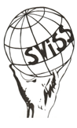

Detailed History of BeMSA Ghent
Explore BeMSA Ghent throughout the years.
About the reconstruction
The following page presents a reconstruction, compiled in 2026, of the history of BeMSA Ghent, tracing its roots back to the late SWISS era and its evolution into BeMSA Ghent. This overview has been created using archived files, old documents, reports, websites, and other preserved materials. As with any historical reconstruction, some events, projects, dates, or details may be incomplete or missing. If you notice inaccuracies, possess additional information, photos, or archival material, or would like to contribute to completing the story of BeMSA Ghent, feel free to send them through this contactform. Every contribution helps preserve our shared history. For more detailed information, you can also consult our annual reports. You can download these via the icon in the section of the respective year.
 The BeMSA Ghent Board thanks you for your interest in our history.
The BeMSA Ghent Board thanks you for your interest in our history.
2009
In a time when BeMSA wasn't yet a thing in Ghent nor Belgium, the SWISS (...) was very active organising several projects inline with the current BeMSA Ghent projects.
Important milestones and early projects:
- Lecture by Tariq Ramadan: Islam and Human Rights. On invitation of Eva Brems from Ghent University, specialising in Human Rights and Non-Western Law, Tariq Ramadan, one of the most prominent and controversial voices on Islam, came to Ghent to give a lecture on Islam and Human Rights. During the lecture, he explored the relationship between Islamic thought and human rights principles.
- Infosession exchanges. Although not SCORE or SCOPE through IFMSA, the SWISS already organised its own exchanges abroad for medicine students.
- Palestine-evening. Testimonial, film, workshop dancing and couscous and mint tea at fair prices.
- Music for Life.
- Congress: Asylum and health. The session brings together several speakers with expertise in healthcare, migration, and asylum. Rita Vanobberghen, general practitioner at Geneeskunde voor het Volk, shares her extensive experience working with asylum seekers and her involvement in supporting hunger strikes. Hadiel Holail from the Progress Lawyers Network discusses the legal aspects of asylum. Stefanie De Maesschalck from Ghent University, Department of Family Medicine and Primary Health Care, presents her doctoral research on communication with migrants in primary care. Nina Henkens, staff member of the Movement for Children Without Papers, offers insight into the situation of undocumented children. The workshop is led by Joris De Beer, who previously worked as a refugee camp coordinator for Médecins Sans Frontières.
On the national level, a major change took place. Students from SWISS (Ghent), Leuven, and Antwerp joined forces to establish BeMSA, the Belgian Medical Students’ Association, which became a candidate member of the International Federation of Medical Students’ Associations (IFMSA), BeMSA’s parent organisation. IFMSA, founded in Copenhagen shortly after the Second World War, was created to foster international cooperation, peace, and collaboration among medical students worldwide. Through this connection, Belgian medical students would later gain access to a global network of exchanges, projects, trainings, and opportunities in global health.

Logo of BeMSA Ghent's predecessor, SWISS2010
Another year for SWISS with several projects with high attendance, such as:
- Heart for Life I, a project that would grow into one of BeMSA Ghent’s most popular initiatives, started in 2010. It went on to be organised annually until its final edition in 2025. The project was eventually discontinued due to government regulations, as it was classified as a screening programme, bringing its further development and continuation to an end.
- Village party. Sadly, not much is yet known about this project.
- Turquaze film in the cinema. Sadly, not much is yet known about this project.
- Visiting a mosque. Sadly, not much is yet known about this project.
- Global Health Short Course.
- Summerschool Health & Migration?
 Global Health Short Course | Archive
Global Health Short Course | Archive
2011
A major milestone for SWISS: the organisation decided to change its name to BeMSA Ghent, officially becoming a local committee of BeMSA National.
- SCOPE is founded in BeMSA Ghent, students had the opportunity to go to an infosession to candidate for a professional exchange abroad.
- The first edition of Teddy Bear Hospital is launched, a project aimed at helping children overcome their fear of the “white coats.” The initiative proved to be a great success, growing into a long-standing project that has been organised for more than 15 years.
- The World AIDS Day poster campaign is organised to raise awareness about HIV & AIDS and encourage discussion around prevention, solidarity, and global health.
- A collaboration between Artsen Zonder Grenzen and Reproductive Health brings a testimony by a midwife, offering students insight into reproductive healthcare and humanitarian medical work in challenging contexts.
- Heart for Life is organised once again, continuing its mission of raising awareness around cardiovascular health and prevention within the wider community.
- UAEM – Universities Allied for Essential Medicines hosts an evening discussion with a UAEM member from Germany, exploring global access to medicines and the role of students in healthcare advocacy.
- The Organ Donation Working Group organises an activity focused on organ donation, aiming to inform students and stimulate reflection on donation and transplantation.
- The first edition of Healthy Nutrition Lessons in Nieuw Gent takes place, promoting healthy eating habits and lifestyle awareness among young people.
- The first edition of First Aid for Parents is launched, equipping parents with practical first-aid knowledge and skills for everyday emergencies.
- Dr. Luther Castillo from Honduras gives a lecture on free healthcare, sharing his experiences and perspectives on healthcare accessibility and social medicine.
- The Summer School on Health & Migration brings together participants to explore the intersection of healthcare, migration, and social determinants of health.
2012
Another year description.
- An information evening on international clinical internships is organised, providing students with guidance on opportunities abroad and application procedures.
- An SG World AIDS Day talk is held featuring Mark Heywood. He is the director of Section 27, a South African human rights organisation named after the section of the South African Constitution that guarantees the right to access healthcare. He is also a co-founder of the Treatment Action Campaign (TAC), which works alongside Médecins Sans Frontières to ensure access to HIV/AIDS prevention and treatment for all.
- The second edition of the local project on healthy nutrition takes place, continuing efforts to raise awareness about healthy eating habits.
- The second edition of First Aid for primary school children and parents is organised, aiming to provide basic emergency skills in an accessible way.
- The second edition of Teddy Bear Hospital (TBH II) is organised, further expanding the project aimed at reducing children’s fear of healthcare settings.
- An international cooking evening is organised, bringing students together to exchange cultures through food and social interaction.
- The SCOPE programme is officially launched, marking the start of BeMSA Ghent’s international clinical exchange opportunities.
- The Summer School on Health & Migration is organised, focusing on the intersection of healthcare, migration, and social determinants of health.

2013
Another year description.
- Workshop Sexual Grey Zones - 29 October. An interactive workshop exploring consent, personal boundaries and “sexual grey zones”, encouraging students to reflect on sexuality, communication and respect.
- Deaf Culture Lecture - An evening dedicated to understanding the world of deaf and hard-of-hearing individuals. The lecture, given in Flemish Sign Language with interpretation, introduced participants to deaf culture and communication in healthcare settings.
- Understanding Motor Disabilities - A project aimed at helping future physicians better understand and communicate with people living with motor disabilities.
- First Aid Basics for Children and Parents - 21 February, Victor Carpentier Primary School. BeMSA Gent taught children from the 5th and 6th grade and their parents how to respond to common household accidents, with room for questions and practical discussion.
- Teddy Bear Hospital - 25 February–1 March, UZ Gent. Children from kindergarten and primary school visited a mock hospital where their teddy bears were examined and treated by medical students. The project aimed to reduce fear of healthcare environments while helping future doctors gain experience communicating with children.
- Heart for Life - 29 September, Grootkanonplein Ghent. A cardiovascular health awareness campaign in honour of World Heart Day, where volunteers assessed cardiovascular risk through questionnaires and blood pressure measurements.
- Healthy Nutrition Project - A continuation of the healthy lifestyle project, where children learned about healthy nutrition, exercise and hygiene through interactive activities and games.
- SCOPE Gent Launch - The local SCOPE project was officially developed in Ghent, involving preparations with the faculty, UZ Gent and internationalisation services to organise incoming clinical exchanges.
- Summer School Health & Migration III - July. The third edition of the international summer school brought together medical students from around the world to explore migration, human rights, communication and global health through lectures, field visits and intercultural exchange.
- BeMSA Gent Planning Weekend - 4–6 October, Domein De Kruier (Balen). A weekend focused on teambuilding, brainstorming and strategic planning, during which BeMSA Gent redesigned its organisational structure and future vision.
- Info Evening Abroad - 24 October, UZ Gent Auditorium D. An information evening for students interested in international experiences, presenting opportunities such as exchanges, internships and international congresses.
2014
Another year description.
- BeMSA Gent Planningsweekend - 26–28 september - Weekend in Ermetton-sur-Biert met teambuilding en het uitwerken van de plannen voor het nieuwe werkjaar.
- Filmavond “Mensrechten Vandaag” - 21 oktober - Vertoning van The Butler, gekozen via studentenpoll, om mensenrechten als actueel thema te belichten.
- Infoavond Buitenland - 23 oktober - Jaarlijkse infoavond over buitenlandse stages, uitwisselingen, beurzen en extracurriculaire mogelijkheden.
- SOS Vormingsdag - 31 oktober - Training door Sensoa voor studenten die seksuele voorlichting geven in middelbare scholen.
- SOS – Seksuele Educatie Op School - 3–6 november & 18 december - Interactieve sessies van 4 uur in scholen over seksualiteit, relaties, anticonceptie en SOA‑preventie.
- Gezonde Voeding (deel 1 & 2) - 19 november & 2 december - Project in lagere scholen met uitleg over gezonde voeding, kookworkshops en een beweegparcours.
- Heart For Life - 29 november - Sensibiliseringsactie waarbij studenten het cardiovasculair risico van voorbijgangers bepalen op drie locaties.
- Dag van de Mensenrechten - 10 december - Filmpje en posters in auditoria om studenten bewust te maken van de 30 mensenrechten en hun actuele relevantie.
- Teddy Bear Hospital - 9–13 maart - Kinderen laten hun knuffels “onderzoeken” in het Skillslab om angst voor dokters te verminderen.
- Clubavond: Safe Sex - datum t.b.d. Thema-avond met spelletjes, cocktails en gratis condooms, in samenwerking met Wingman.
- Speeddate Your Doctor - begin april - Speeddating tussen studenten en artsen uit diverse specialismen om studiekeuze en carrièrevragen te bespreken.
- Sport met Mensen met een Beperking - 29 maart - Sportdag voor studenten en personen met een beperking, gericht op inclusie en communicatietraining.
- Studium Generale: Roma in Gent - 22 april - Panelgesprek “Roma in Gent: Mogen we ier nog efkes blijven?” met sprekers uit de Roma‑gemeenschap en integratiedienst.
- SCOPE – Zomeruitwisseling - juli–augustus - Internationale klinische stages van 4 weken; Gent ontvangt 10 studenten en stuurt 10 studenten uit.
- SCORE – Onderzoeksuitwisseling - zomerperiode - Eerste Belgische editie: Gent ontvangt 2 studenten en stuurt 3 uit voor onderzoeksstages van 4 weken.
- Summer School “Health & Migration” - juli - Internationale 10‑daagse summer school rond gezondheid en migratie, met lezingen en bezoeken.
2015
- 25–27 september – Bestuursweekend in Sporthome Eeklo met brainstorm, planning en teambuilding.
- 30 oktober – Infoavond BeMSA Gent voor alle studenten over werking, projecten en werkgroepen.
- 30 maart – Clubavond “Sexual Healing” met seks-gerelateerde games en prijzen om taboes te doorbreken.
- 9 november – Clubavond “Party around the world” met verkleedactie, multiculturele drankspelletjes en opbrengst voor goed doel.
- 22 april – Studium Generale “Roma in Gent: Mogen we ier nog efkes blijven?” met panel van experts en getuigenissen.
- 25 november – Lezing “De arts als patiënt en arts; humor op zware momenten” door dr. Hugo Stuer in UZ Gent.
- 23–24 oktober – SOS-trainingsweekend met lezingen, vorming en teambuilding voor nieuwe vormingswerkers.
- 21 april – SOS-schoolbezoek in Lokeren met interactieve sessies rond seksualiteit en relaties.
- 28 april – SOS-schoolbezoek in Gijzegem met peer‑educatie over seksualiteit en SOA‑preventie.
- 27 oktober – SOS-schoolbezoek in Gijzegem met interactieve sessies voor secundaire leerlingen.
- 9, 10 en 18 november – SOS-sessies in Voskenslaan met anonieme vragenbokaal en educatieve werkvormen.
- 16–24 november – SOS-sessies in Mariakerke met focus op betrouwbare informatie en mythes doorbreken.
- 24 november – The Stigma Talk rond HIV en stigma met lezingen en getuigenissen van experten.
- 1 december – The Stigma Challenge op tram 1 en Gent-Sint-Pieters om HIV bespreekbaar te maken met live optredens.
- Datum t.b.d. – Workshop seksueel geweld met dr. Ines Keygnaert over signalen, aanpak en rollenspellen.
- Datum t.b.d. – Daphné Project rond omstaandertraining seksueel geweld met 6u opleiding en interviews.
- 24 april – Gezonde Voeding-sessie in Victor Carpentierschool voor 5e en 6e leerjaar met koken en sportactiviteiten.
- 21 oktober – Gezonde Voeding-sessie voor 2e leerjaar met spel, kookworkshop en beweegparcours.
- 21 november – Heart For Life in Gent Zuid en Korenmarkt met 460 gescreende voorbijgangers en infosessie vooraf.
- 10 december – Dag van de Mensenrechten met posterproject gebaseerd op brieven van geïnterneerden.
- 9–13 maart – Teddy Bear Hospital in Skillslab UZ Gent met 232 kinderen en 78 studenten voor angstreductie en communicatie‑oefening.
- 31 maart – Date Your Doctor met 51 artsen en >100 studenten voor speeddates over specialisaties.
- 3 november – Date Your Doctor met 30 artsen en 70 studenten voor kleinschaligere, intiemere gesprekken.
- Datum t.b.d. – Sportdag met mensen met een beperking om communicatie‑ervaring en inclusie te bevorderen.

2014
Another year description.
- Achievement 1
- Achievement 2
2014
Another year description.
- Achievement 1
- Achievement 2
2014
Another year description.
- Achievement 1
- Achievement 2
2014
Another year description.
- Achievement 1
- Achievement 2
2020
Another year description.
- Achievement 1
- Achievement 2
2020
Another year description.
- Achievement 1
- Achievement 2
2020
Another year description.
- Achievement 1
- Achievement 2
2020
Another year description.
- Achievement 1
- Achievement 2
2020
Another year description.
- Achievement 1
- Achievement 2
2020
Another year description.
- Achievement 1
- Achievement 2
2020
Another year description.
- Achievement 1
- Achievement 2